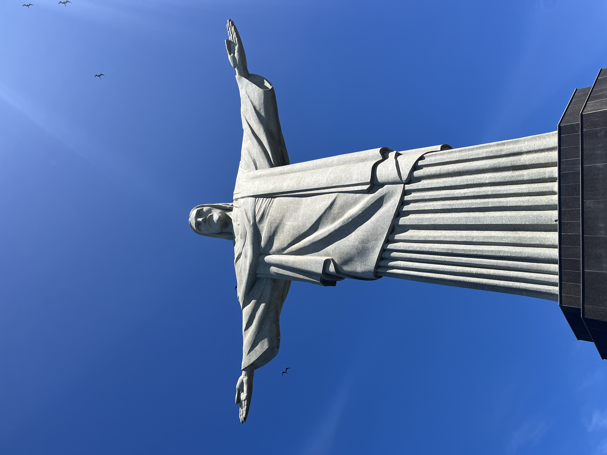

Cristo Redentor

El Cristo Redentor es el monumento más reconocido de Río de Janeiro. Se encuentra en la cima del cerro Corcovado, a 709 metros sobre el nivel del mar, y fue inaugurado el 12 de octubre de 1931 tras casi cinco años de construcción.
La estatua, de estilo art decó, mide 30 metros de altura sobre un pedestal de 8 metros, y en 2007 fue nombrada una de las Nuevas Siete Maravillas del Mundo.
← Volver a la página principal